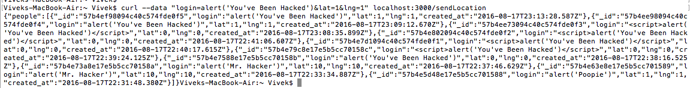
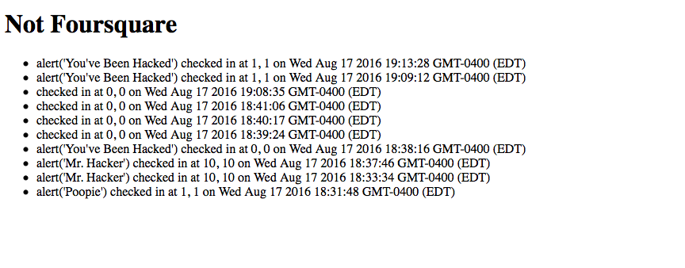

Vivek's Security Assessment
by Vivek Ramchandran
Introduction
This lab is asking us to test the security of a server given to us. The server is created to let you know the locations of all other users that have checked in when you check in. That is, it takes in a user location through the /sendLocation POST route, and then will output the locations of the other users that have already checked in. It is my job to find the places in the server that are vulnerable and to find solutions to the issues I find.
Methodology
The first thing that I did was the "black-box" testing, or entering a bunch of rubbish into the web app and using curl. Next, I searched through the code for other places of vulnerability.
Abstract of Findings
I found three vulnerabilities in Bernstein's server. The first two, which are cross-site scripting and Injection, both stem from a user adding faulty input into the page. The other vulnerability found, a Distributed Denial of Service, happens because of a lack of limitation of the amount of data that a single user can send to the server. It is possible for a user to send data roughly a million times and crash the server. This server has a general lack of privacy of the data passed into it, and makes it so that an outside user can both access and modify the data on the website.
Cross Site Scripting, or XSS
Cross Site Scripting, or XSS is one of the most common vulnerabilities. Anytime a server receives user input with HTML data, the user could send some Javascript, which could create some bad results. The damage can range to simply annoying scripts (such as the ones I posted) to serious hacks that could potentially steal information about other users.
This error was found in the /sendLocation post route
The severity of the issue is very high. This website is all about user input, and an issue such as this could make it so that a single individual could ruin the server for everyone else, as well as attempt to hijack information from everyone else.
This error was found using curl. A picture is attached: 
A picture of the webpage is attached: 
This vulnerability can be fixed a number of different ways. One method is called whitespace - what is essentially done is the user input is parsed, and special characters are replaced with an empty string. This makes it so that input will basically not register.
Injection
Injection of HTML is another security issue. A user can submit HTML content through a query, allowing them to add content to the page.
This issue can be found in the /sendLocation POST route.
The severity of the issue is medium. Injections are annoying, and can change things such as the style of the page, but unless the user foolishly inputs personal data into the page, Injections are more irritating than anything.
This issue was found by entering a query in the url: http://localhost:3000/checkins.json?login=mchow
Here is a screenshot of the output of the page.
A possible defense to this vulnerability is through input sanitisation. This can be done a number of different ways, but a great way is to escape special HTML characters such as tags (<,>) so that the browser does not and cannot render them, and thus does not properly read in the input.
Distributed Denial of Service
A distributed denial of service, or a DDOS, happens because there is no part in this script that checks how many check ins a particular user has made. If they end up posting a million times, and then you try and GET the data, the result could be a system crash because of the ridiculous amount of checkins made.
This issue can be found in the /sendLocation POST route.
The severity of this issue is very high. A DDOS attack can crash an entire system, making it so that no users are able to access the server.
This issue resides in the following code. It is possible to check in as many times as possible. and that could lead to a DDOS. 
While talking about proof of vulnerability, I do not currently have an example of it, as I have no desire to send a bunch of data to try to crash the system. However, it is very possible, and could be done by a simple program that continually checks in until the server crashes.
The best defense to this vulnerability is to create some type of code that prevents the user from entering data after a certain number of posts.
Conclusion
There were multiple issues found with the server that could easily destroy the usability of the website and potentially cost the users some information. Fortunately, all three of the issues that I found could be easily fixed. Also, this particular app does not contain any private information that is stored in the database. Everything considered, the fixes for these issues are relatively easy, so therefore the cost to secure this server would be very low.